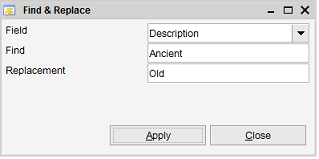
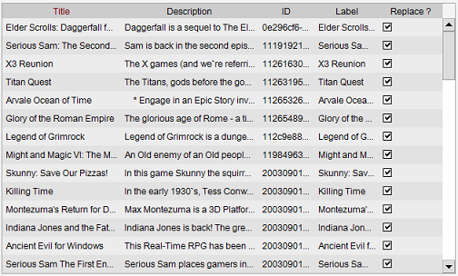

The Find & Replace function is accessed via the right-click menu.

This functionality allows you to quickly replace part a value of all items in the module with a new value.
This allows you to quickly change a reference you have created for an item with another reference (change category X
for category Y, while leaving other categories present) or to replacing text with another text.
The Find and Replace will first present you the changes before applying them (you can still opt out at that point).
-
Field
Select the field where you want to replace values
-
Find
Enter / select the value to replace.
-
Replacement
Enter / select the replacement for the defined value (the Find)
Preview
After setting the correct values and pressing on "Apply" a preview is shown.

Here you can see exactly what will be changed. Also you still have the ability to exclude items
from the replacement process by unchecking the checkbox of the specific item.